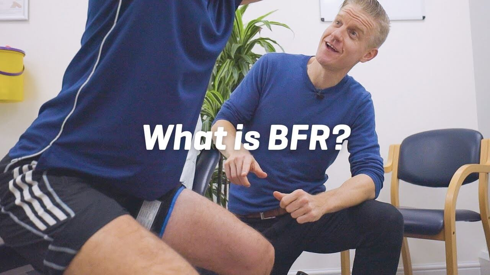
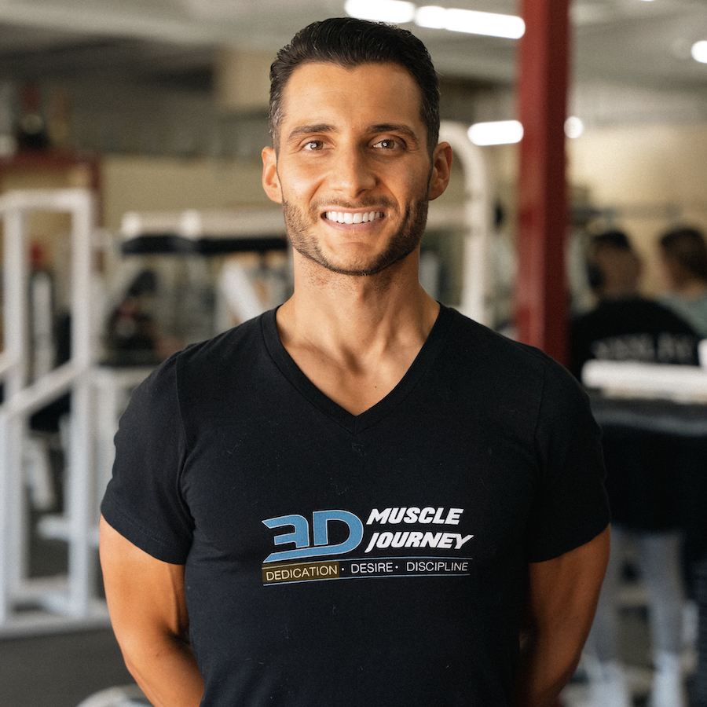

Evidence-based BFR education led by published researchers and experienced clinicians.
The BFR Pros was founded with a simple but powerful idea: health and performance professionals deserve BFR education that's grounded in research, free from commercial bias, and immediately applicable in clinical practice.
Unlike other BFR education providers, we have no cuff brand affiliation. We don't sell devices. We teach the science, the technique, and the clinical reasoning — so you can use any BFR system and get exceptional results.
Our curriculum is built on peer-reviewed research, refined through hundreds of live workshops, and trusted by physical therapists, strength coaches, and athletic trainers across the country.


PT, MS, CSCS
Dr. Nicholas Rolnick is a physical therapist, published BFR researcher, and educator. He teaches Kinesiology and Strength & Conditioning at Concordia University and Lehman College in New York.
His research on blood flow restriction training has been published in leading peer-reviewed journals and featured by major media outlets including CNN, the Wall Street Journal, Forbes, GQ, ESPN, and Men's Health.
Nick's unique combination of clinical practice, academic research, and hands-on teaching makes him one of the most sought-after BFR educators in the world. He has personally led over 26 live workshops for organizations including Ivy Rehab Network, Professional Physical Therapy, and Kinesport.
PT, DPT
Dr. Nicholas M. Licameli is a Doctor of Physical Therapy, natural bodybuilder, and the director of an outpatient physical therapy clinic. He also serves as an Injury Reduction Specialist for 3D Muscle Journey.
Nick Licameli brings a unique perspective to BFR education — combining clinical rehabilitation expertise with elite-level strength training experience. His understanding of both the research and the practical application of BFR makes the content accessible to professionals across all disciplines.
Together with Dr. Rolnick, he co-created The BFR Pros to democratize BFR education and make evidence-based training available to every health and performance professional.

Every module is built on peer-reviewed evidence. We update our curriculum as new research emerges.
We teach techniques, not products. Your education should empower you, not lock you into a device ecosystem.
Theory is nothing without practice. Every concept is tied to real-world clinical application and case studies.
Our research and expertise have been recognized by leading media outlets and academic journals worldwide.
Nick Featured In


BFR As Seen In


Join hundreds of clinicians and coaches who trust The BFR Pros for their BFR education.
View Course →